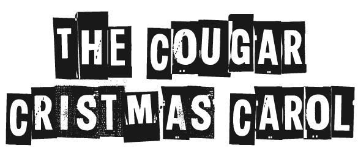

Hey there! I'm a software engineer with a solid foundation in C++, Python and Java with extensive knowledge with Object Oriented Programming and Algorithm Design. I have a desire to learn new things and challenge my self in new ways!
My projects and experiences focus on full stack development, giving me a solid foundation in the entire development stack, from front-end to back-end, graphical and UI/UX design, and everything inbetween!
I make it a personal goal to keep up to date with the latest frameworks, technologies, and languages. I'm familiar with React, Node.js, jQuery, Firebase, AWS Services such as EC2, S3, Elastic Beanstalk, and more!
I put a focus on writing exceptional, bug free, optimized code for a wide variety of devices, ready to be deployed on a variety of different production enviroments. I also have excellent mathematical and analytical skills, to tackle any situation. Need some awesome code? Look no further.
Above all, I have a passion for learning and furthering my knowledge. I'm a great communicator who isn't afraid to take charge and lead projects. I love collaborating with others to make visions a reality and achieve a common goal!
Interested? Check out my resumé for a further rundown of all of my skills, projects, experience, awards and more!
This site uses a combination of HTML, CSS, and JS along with frameworks such as jQuery to create a stunning portfolio, hosted on AWS S3. Focused on making an aesthetically pleasing, yet intuitive design for the user, while conforming to material design standards. Designed a responsive system to ensure compatibility over a multiple range of devices and displays while being optimized and lightweight.
Source available on GitHubWinner of McHack's Best Security Project!
Fully designed and programmed in 24 hours during Canada's largest Hackathon, McHacks!
weCU monitors your home using a multitude of different sensors ranging from a temperature sensor, all the way to a gas detector
that is used for detecting smoke. The system allows you to remotely monitor the status of your house and also receive
notifications via text message and push notifications. The project communicates to a real-time Firebase server through the Telus GSM network, and
users can monitor
Initally, the project was intended for educational purposes to teach myself Swift and how to use XCode to build user-focused, responsive apps, but grew into much more. The app uses many APIs and libraries to fetch data, such as Apple's Corekit for user location, as well as OpenWeatherMap for fetching weather data using Alamofire, and parsing it. The end result is a material design app that is simple, yet beautiful.
Source available on GitHubTo the Stars is a 2D side-scroller inspired by fast-paced and challenging games, such as Geometrey Dash. The game was made using Unity, with all of the coding done in C# and Python, with an emphasis on optimized code for running on a variety of devices. The game takes advantage of procedurally generated content to provide users with an endless, always new and exciting experience.
Source available on GitHubAs a hobby, I also make produce digital content such as films. You can check out all of my Digital Media content below! Most of my content was produced in colaboration with the students at Colonel By Secondary School, as part of our co-op program.
Role: Producer, Editor, Co-Host
About:
High School Happenings is a monthly television programme on Rogers Television that features unique educational programs from a variety of high schools across Ottawa.

Role: Editor, Special Effects, Producer
Synopsis:
It's Christmas time, and ultra-popular high school superstar Daniel has it all.
But after learning that someone has sabotaged his entire future, university admissions, and scholarships, he begins to hate the holiday season,
lashing out at everyone around him for revenge. After a nasty fall outside, three ghosts attempt to revive his Christmas spirit...
Role: Editor, Cinematographer, Presenter
About:
CougarVision is Colonel By Secondary School's internal television network,
bringing students 6-10 minute daily episodes featuring announcements, shorts, and event coverage. It is entirely student-run.